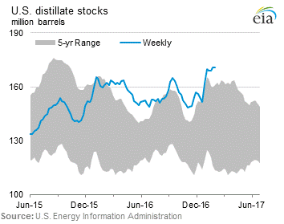
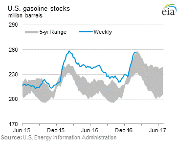
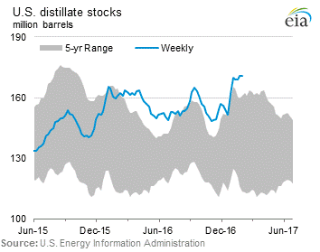
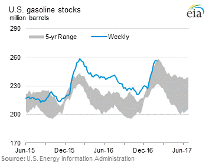

Release date: January 25, 2017 | Next release date: February 1, 2017
Mexican gasoline market reforms could influence U.S. gasoline export trends
The Mexican government is in the process of opening its gasoline and diesel markets to outside competition and replacing government-set prices with market-based prices. Last year, Mexico began allowing entities other than the state-owned company Petróleos Mexicanos (Pemex) to import gasoline and diesel and open retail stations. These changes followed previous energy sector reforms that ended Pemex’s upstream monopoly and opened the oil and natural gas sectors to foreign direct investment. Although Mexico is a large crude oil producer, it relies heavily on imports of gasoline from the United States to meet domestic demand. Therefore, the outcome of gasoline market reforms in Mexico may have significant implications for the sale of U.S.-produced gasoline.
The switch to market-based pricing is being implemented in phases starting with a series of national price adjustments. The transition began at the start of this year. As a result, January retail prices have averaged 14% and 20% higher than in December for regular gasoline and premium gasoline, respectively. Several other national adjustments will be made in the coming weeks. Full market-based pricing will be rolled out regionally beginning with the northern states of Baja California and Sonora on March 30.
For the past several years, Pemex total gasoline sales, which can be used as an estimate for consumption, averaged around 800,000 barrels per day (b/d). However, gasoline sales increased 2.5% and averaged nearly 820,000 b/d in 2016 (through November). Mexican consumption of gasoline has been significantly greater than refinery production, with the difference increasing over the past three years (Figure 1).
Mexico’s refineries have historically been running at low utilization rates because they are challenged to produce clean gasoline and distillate fuels from the available marginal barrel of heavy sour crude oil. More recently, outages have hampered Mexico’s six refineries, which had a total output (including non-gasoline products) of 1.1 million b/d through November 2016, down from 1.3 million b/d over the same months in 2015. Mexican refinery output of gasoline fell steeply to 381,000 b/d in 2015 and then fell again to 333,000 b/d in 2016 (through November). Refinery utilization rates in Mexico declined in 2016 from 78% in January to 60% in November, creating a widening gap between domestic supply and demand.
To meet demand, Mexican imports of gasoline have climbed rapidly over the past two years. According to Pemex, Mexico’s motor gasoline imports were 122,000 b/d higher during the first 11 months of 2016 than during the comparable 2014 period. Since 2008, EIA data indicates that Mexico has imported significant quantities of U.S. gasoline. Based on U.S. and Mexican data sets, U.S. gasoline exports accounted for 80% of all Mexican gasoline imports and provided an average of 47% of Mexico’s gasoline consumption during the first 10 months of 2016 (Figure 2).
The volume of gasoline trade between Mexico and the United States is significant to U.S. refineries. Over the past five years, U.S. exports to Mexico accounted for between 44% (2014) and 54% (first 10 months of 2016) of total U.S. gasoline exports. On a year-over-year basis, U.S. gasoline exports to Mexico increased by 71,000 b/d in 2015, with additional average growth of 75,000 b/d over the first 10 months of 2016, when U.S. exports to Mexico averaged nearly 390,000 b/d.
While the effects of the ambitious reforms now underway in Mexico’s energy sector will only be realized over an extended period of time, their possible impact on both gasoline demand in Mexico and the amount of gasoline produced in its refineries could have significant implications for the future trends in U.S. gasoline exports to that key market. Regardless, Mexico will remain a major destination for U.S. exports.
U.S. average regular gasoline and diesel retail prices fall
The U.S. average regular gasoline retail price fell three cents from the previous week to $2.33 per gallon on January 23, up 47 cents from the same time last year. The Midwest fell six cents to $2.22 per gallon, the East Coast fell three cents to $2.35 per gallon, and the Gulf Coast fell two cents to $2.12 per gallon. The West Coast and the Rocky Mountains each fell by less than one cent and remained at $2.68 per gallon and $2.26 per gallon, respectively.
The U.S. average diesel fuel price fell two cents to $2.57 per gallon on January 23, 50 cents higher than a year ago. The Midwest price declined three cents to $2.51 per gallon and the Gulf Coast fell two cents to $2.41 per gallon. The West Coast, East Coast, and Rocky Mountains each fell one cent to $2.85 per gallon, $2.63 per gallon, and $2.53 per gallon, respectively.
Propane inventories fall
U.S. propane stocks decreased by 4.0 million barrels last week to 68.2 million barrels as of January 23, 2017, 15.5 million barrels (18.5%) lower than a year ago. Gulf Coast and Midwest inventories each decreased by 2.0 million barrels and Rocky Mountain/West Coast inventories decreased by 0.1 million barrels, while East Coast inventories remained virtually unchanged. Propylene non-fuel-use inventories represented 6.0% of total propane inventories.
Residential heating oil price decreases while propane price increases
As of January 23, 2017, residential heating oil prices averaged $2.63 per gallon, about one cent per gallon less than last week’s price but nearly 57 cents per gallon higher than last year at this time. The average wholesale heating oil price is nearly $1.71 per gallon, two cents per gallon less than last week but 64 cents per gallon higher than a year ago.
Residential propane prices averaged just over $2.35 per gallon, up nearly three cents per gallon from last week and just over 33 cents per gallon higher than a year ago. Wholesale propane prices averaged nearly $0.90 per gallon, nearly three cents per gallon higher than last week and 45 cents per gallon higher than last year's price.
For questions about This Week in Petroleum, contact the Petroleum Markets Team at 202-586-4522.
Retail prices (dollars per gallon)


| Retail prices | Change from last | ||
|---|---|---|---|
| 01/23/17 | Week | Year | |
| Gasoline | 2.326 | -0.032 | 0.470 |
| Diesel | 2.569 | -0.016 | 0.498 |
| Heating Oil | 2.631 | -0.005 | 0.565 |
| Propane | 2.353 | 0.027 | 0.334 |
Futures prices (dollars per gallon*)


| Futures prices | Change from last | ||
|---|---|---|---|
| 01/20/17 | Week | Year | |
| Crude oil | 52.42 | 0.05 | 20.23 |
| Gasoline | 1.566 | -0.046 | 0.482 |
| Heating oil | 1.646 | -0.005 | 0.650 |
| *Note: Crude oil price in dollars per barrel. | |||
Stocks (million barrels)
 



| Stocks | Change from last | ||
|---|---|---|---|
| 01/20/17 | Week | Year | |
| Crude oil | 488.3 | 2.8 | 24.7 |
| Gasoline | 253.2 | 6.8 | 4.8 |
| Distillate | 169.1 | 0.1 | 8.7 |
| Propane | 68.212 | -4.033 | -15.483 |